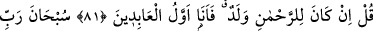
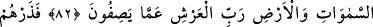
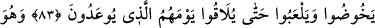
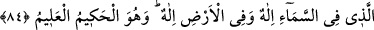
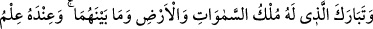
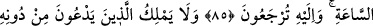
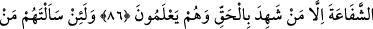
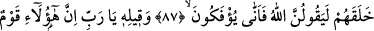
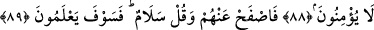

GÖKTEKİ İLÂH DA,
YERDEKİ İLÂH DA O’DUR
81. De ki: Eğer Rahmân’ın bir çocuğu olsaydı, elbette ben (ona) kulluk edenlerin
ilki olurdum!
82. Göklerin ve yerin Rabbi, Arş’ın da Rabbi olan Allah onların
vasıflandırmalarından yücedir, münezzehtir.
83. Sen bırak onları, kendilerine söz verilen günlerine kavuşuncaya kadar bâtıla
dalsınlar, oynaya dursunlar.
84. Gökteki İlâh da, yerdeki İlâh da O’dur. O, hakîmdir, her şeyi bilendir.
85. Göklerin, yerin ve ikisi arasında bulunan her şeyin mülkü kendisine âid olan
Allah ne yücedir! Kıyâmet saatini bilmek de O’na mahsustur. Siz O’na
döndürüleceksiniz.
86. Allah’ı bırakıp da taptıkları putlar, şefâat edemezler. Ancak bilerek hakka
şâhidlik edenler bunun dışındadır.
87. Andolsun onlara kendilerini kimin yarattığını sorsan elbette «Allah» derler. O
halde nasıl (Allah’a kulluktan) çeviriliyorlar?
88, 89. (Rasûlullah’ın:) Yâ Rabbi! Bunlar, îman etmeyen bir kavimdir, demesine
karşı Allah: Şimdilik sen onlardan yüz çevir ve size selam olsun de. Yakında
bilecekler! buyurdu.
Kâfirlere “De ki:” Sizin «melekler Allah’ın kızlarıdır» dediğiniz gibi farz-ı muhal
“Eğer Rahmân’ın bir çocuğu olsaydı, elbette ben (ona) kulluk edenlerin,” o çocuğa